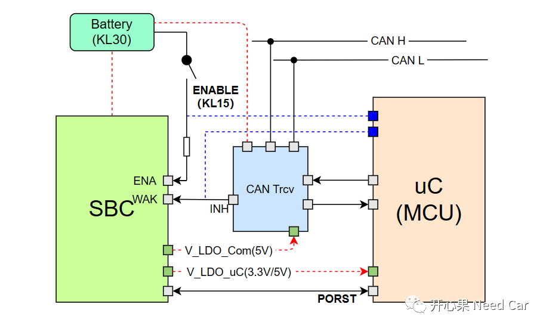
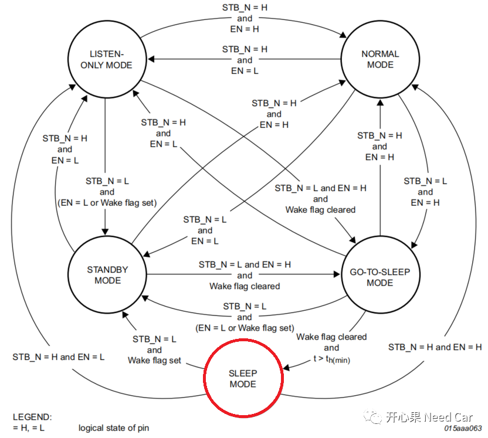
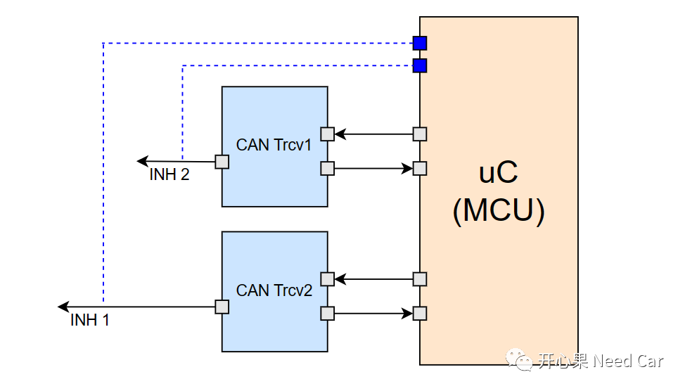
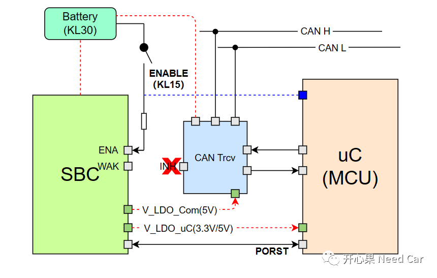
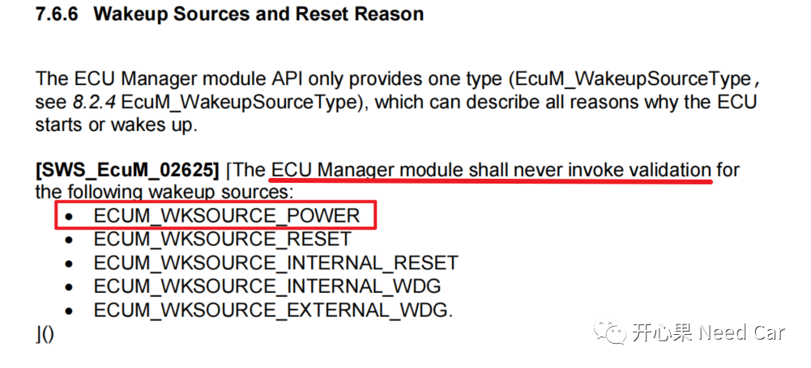

开心果 Need Car · 2023-04-03T18:30:00+08:00 · 微信原文
本文要讨论的问题，如标题。这个问题源于群内小伙伴的提问，具体描述一下Ta的问题：“使用TJA 1043 CAN收发器，如何识别MCU是被PowerON唤醒还是被Bus（总线）扰动唤醒”。如果要想真正识别出MCU被PowerON唤醒还是被Bus唤醒，需要从软/硬件两个方向分析。
1、硬件
硬件层面，确切说，需要清楚自家产品的硬件原理图。一般来说，在产品硬件设计中，可以在主芯片（uC）中预留Trcv INH状态和KL15状态监控的Pin，以此判断MCU的唤醒源，示意如下：

如上图，SBC（System Basic Chip）被使能，分为两种情况：第一、类似KL15硬线，通过ENA Pin使能；第二、类似Trcv INH，通过WAK Pin使能。而这两种方式，是或的关系。所以，当KL15硬线拉高，也就是PowerOn方式使能SBC时，MCU可以通过监控KL15硬线的电平知道此次MCU的唤醒是否由KL15（PowerOn）触发。同理，当Bus有扰动或者特定报文（eg：网络管理报文）时，Trcv被唤醒，使得Trcv进入Standby Mode，进而拉高INH，INH Pin的拉高，会使能SBC，SBC再唤醒MCU，此时MCU可以通过监控INH的电平状态知道是否属于Bus唤醒。
有人说：“如果PowerOn（KL15）唤醒，INH也会拉高，INH Pin和KL15 Pin都拉高，还是区分不出。”这个表述可能不太准确，PowerOn以后，只能使得MCU唤醒，但是，网络唤醒与否，还需要软件的处理。此时，INH是否被拉高，要分情况讨论。具体说：切换Trcv状态，会改变INH Pin的状态，而Trcv状态的改变不仅受总线唤醒控制，还受到uC控制。所以，INH Pin的拉高是由于软件切换Trcv状态导致还是Trcv自身被Bus扰动导致的，还需进一步分析。所以，理清这个问题，我们就需要从另一个方面着手：软件处理。
2、软件
首先，我们要清楚，Trcv状态切换与INH Pin的关系。以TJA1043为例，状态机如下所示：


3、工程思考


往期精彩回顾
Bootloader开发：为什么需要SBL（Secondary Bootloader）?
Autosar EcuM：APP由RUN到POST_RUN浅析